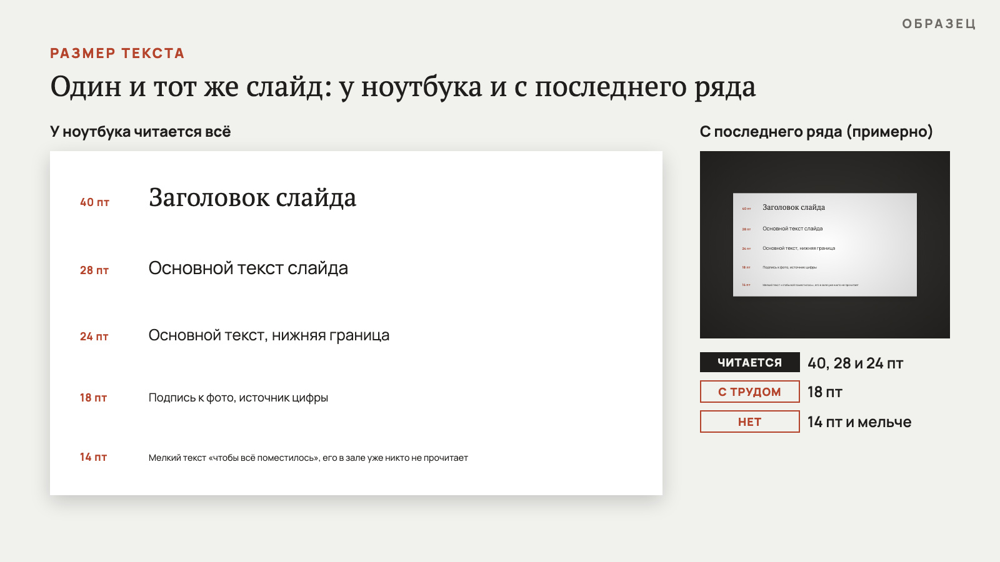
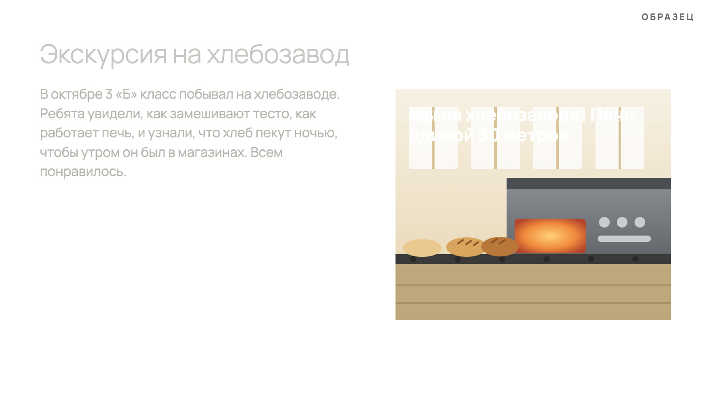
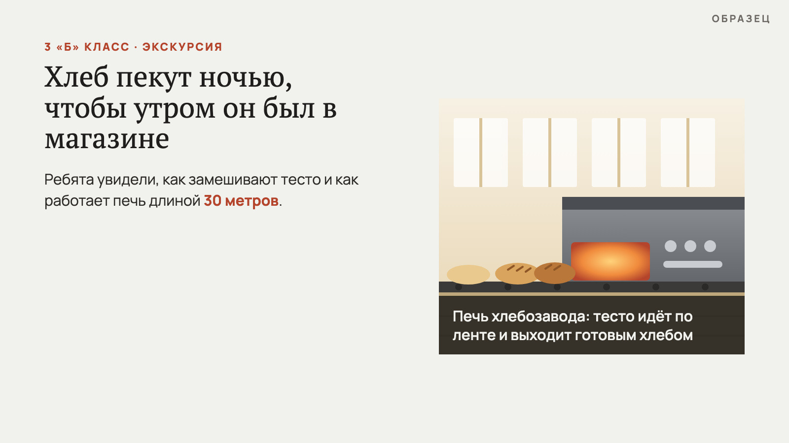
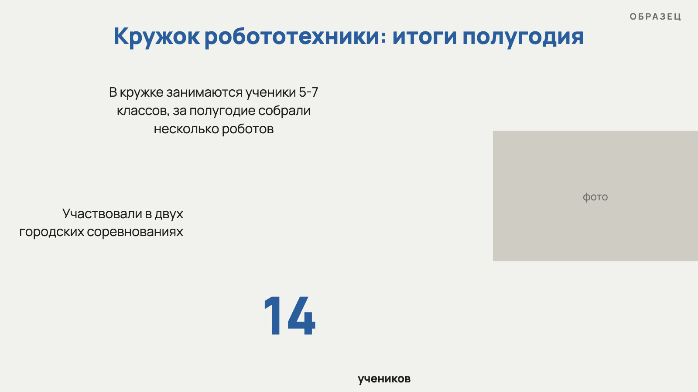
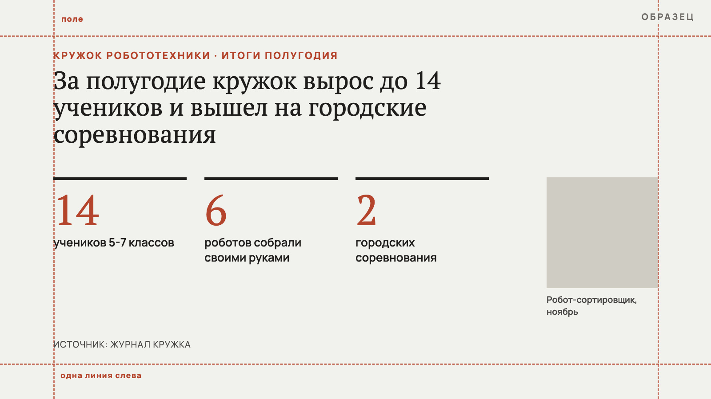
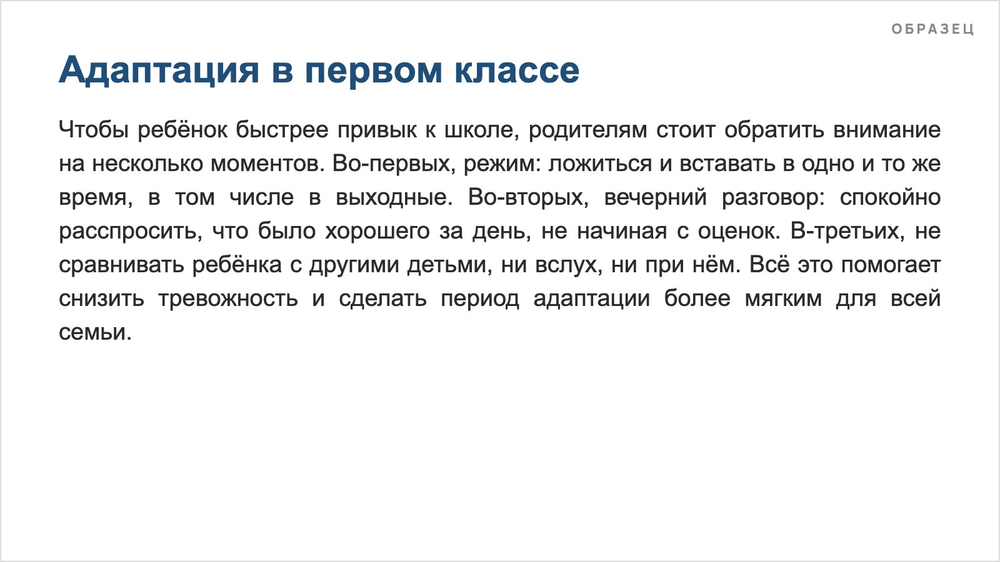
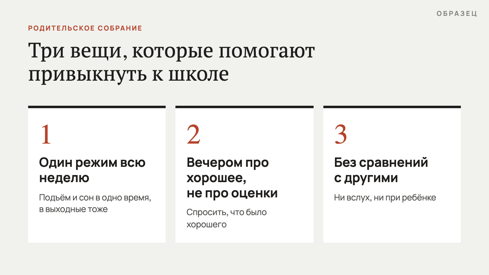
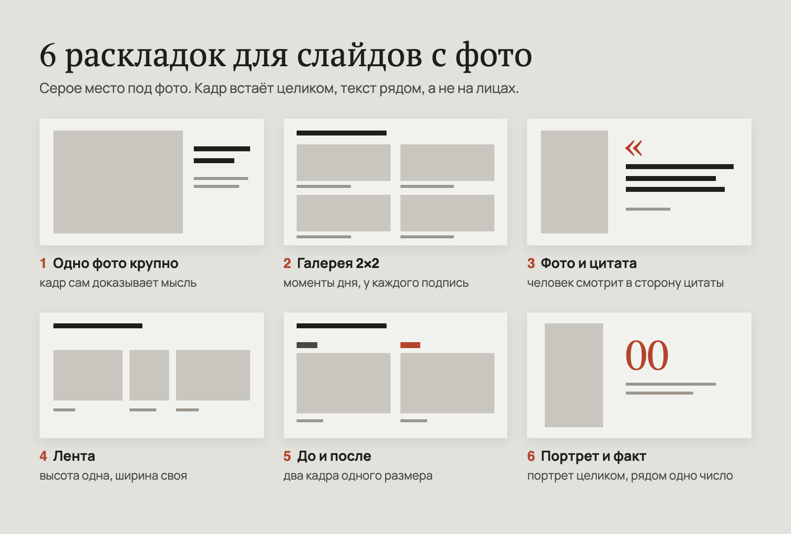
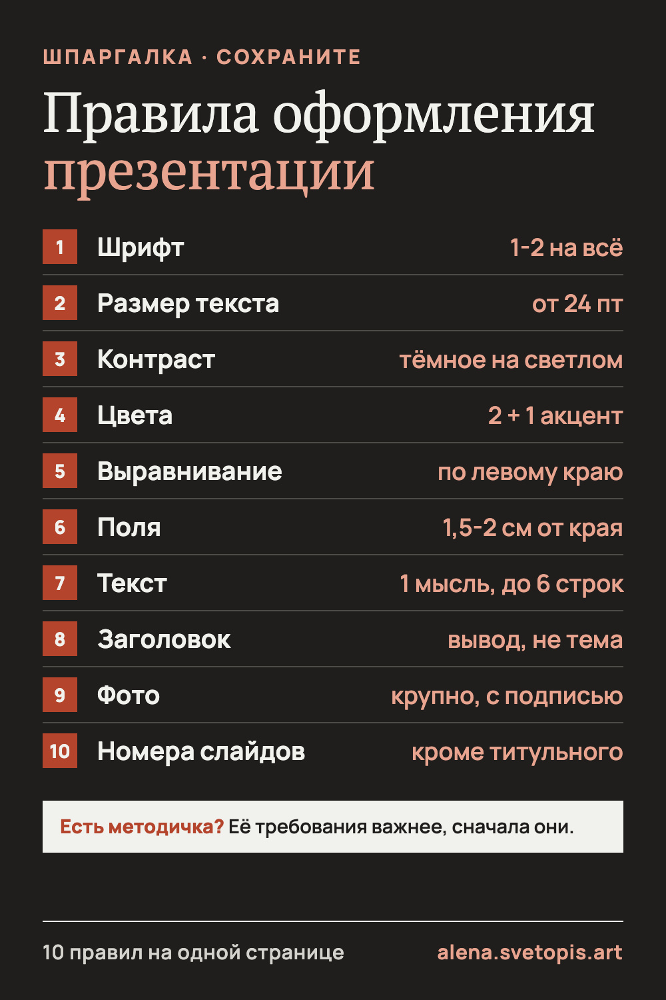

Разбор · оформление презентации
Правила оформления презентации: 10 правил на одной странице
Шрифт, размер, цвет, поля, текст и фото: что проверить до выступления.
Внутри бесплатная шпаргалка на одну страницуОтвет за 10 секунд
Слайд должен читаться с последнего ряда за пару секунд. Десять правил, которые этого добиваются:
- Шрифт1-2 на всё
- Размер текстаот 24 пт
- Контрасттёмное на светлом
- Цвета2 + 1 акцент
- Выравниваниепо левому краю
- Поля1,5-2 см от края
- Текст1 мысль, до 6 строк
- Заголовоквывод, не тема
- Фотокрупно, с подписью
- Номеракроме титульного
Алёна Прасолова, собираю презентации к выступлениям
23 ноября 2026 · 7 минут чтения
Правила оформления презентации обычно пишут так, что после них хочется закрыть ноутбук: «соблюдайте единство стиля», «обеспечьте читаемость». Хорошо. А что нажать?
Я собираю презентации к выступлениям для педагогов, психологов, мастеров и малого бизнеса. На каждом слайде я проверяю одно и то же, и всё это уместилось в 10 правил. Здесь они с цифрами: какой размер, сколько цветов, где поля. Подойдёт для школы, конференции и защиты, а в конце шпаргалка на одну страницу.
Некогда разбираться? Пришлите текстШрифт и размер текста для зала
Заголовок 32-40 пт, основной текст 24-28 пт, подписи от 18 пт, одно главное число 80-120 пт. Не влезает? Режьте текст, а не шрифт.

Как выглядит, когда не так. Текст в 14 пунктов, «чтобы всё поместилось». Три шрифта на одном слайде, заголовок рукописным, половина фраз заглавными буквами.
Почему мешает. У ноутбука вы сидите в полуметре от экрана, и читается всё. В зале экран далеко. Текст в 14 пунктов с последних рядов превращается в серые полоски, и люди перестают даже пробовать.
Размеры для обычного слайда 16:9 в PowerPoint или Google Slides:
| Что на слайде | Размер |
|---|---|
| Заголовок | 32-40 пт |
| Основной текст | 24-28 пт |
| Подписи к фото и источники | от 18 пт |
| Одно главное число | 80-120 пт |
Как сделать
- Один шрифт на всё или два: один для заголовков, другой для текста. Для текста берите простой, без засечек: Arial, Calibri, PT Sans. Рукописные и «весёлые» шрифты не берите даже к детскому празднику: с расстояния они не читаются.
- Меняйте шрифт сразу на всех слайдах, а не по одному. В PowerPoint: «Вид», затем «Образец слайдов». В Google Slides: «Слайд», затем «Изменить тему».
- Текст не влезает в 24 пункта? Дело не в размере, а в количестве текста. Режьте текст, а не шрифт.
- Заглавными буквами только короткие подписи в одно-три слова. Длинную фразу заглавными читать тяжело.
- Проверка: откройте слайд на весь экран и отойдите от ноутбука на три шага. Читается, значит, в зале тоже прочитают.
Цвет и контраст
Тёмный текст на светлом фоне, три цвета на всю презентацию и один акцент на главном. Подпись к фото ставьте на тёмную плашку.


Как выглядит, когда не так. Светло-серый текст на белом, «потому что так нежнее». Белые буквы прямо по фото. Пять цветов на одном слайде.
Почему мешает. Проектор всегда бледнее экрана вашего ноутбука. Нежно-серый текст в зале исчезает совсем, а буквы поверх пёстрого фото рябят и сливаются с небом.
Как сделать
- Тёмный текст на светлом фоне или светлый на тёмном. Самое надёжное: почти чёрный на почти белом.
- Цветов на всю презентацию три: фон, текст и один акцентный. Акцентом красьте только главное: одно слово, одну цифру, одну стрелку.
- Текст поверх фото ставьте только на плашку: прямоугольник тёмного цвета под надписью. Или ставьте текст рядом с фото, а не на нём.
- Не стройте смысл на паре «красное и зелёное»: часть людей почти не различает эти цвета. Подпишите словами или замените один цвет тёмным.
- В светлом классе надёжнее светлый фон. Тёмный фон хорош в затемнённом зале, а при включённом свете он становится серым и текст на нём бледнеет.
Выравнивание и поля
Текст по левому краю от одной линии, поля 1,5-2 см от края со всех сторон, заголовок на всех слайдах в одном месте.


Как выглядит, когда не так. На одном слайде заголовок слева, на другом по центру. Текст стоит столбиком посередине. Блоки висят где придётся, а что-то прилипло к самому краю.
Почему мешает. Глаз каждый раз ищет, где начало. Слайды «прыгают», и выступление кажется неаккуратным, даже если содержание сильное.
Как сделать
- Текст по левому краю. По центру только короткий заголовок в одну-две строки или титульный слайд. По ширине не выравнивайте: между словами появляются дыры (их видно на образце ниже).
- Поля: от края слайда до текста 1,5-2 см со всех сторон. Ничего не должно прилипать к краю, тем более что некоторые проекторы подрезают края кадра.
- Заголовок на всех слайдах в одном и том же месте. Проще всего поставить его один раз в «Образце слайдов», и он будет стоять везде.
- Что относится друг к другу, ставьте рядом, разное разводите. Подпись стоит вплотную к своей картинке, а не посередине между двумя.
- Включите направляющие, чтобы видеть линию: в PowerPoint «Вид», затем «Направляющие», в Google Slides «Вид», затем «Направляющие».
Сколько текста на слайде
Правило простое: одна мысль на слайд. Ориентир по объёму: заголовок-вывод и до шести коротких строк.
Всё, что вы скажете вслух, переносите в заметки докладчика, они есть и в PowerPoint, и в Google Slides.


Абзац почти всегда складывается в одну из пяти схем: карточки, лента, колесо, цепочка, таблица. Как выбрать схему за 10 секунд, я подробно разобрала в статье «5 схем вместо абзаца».
Заголовок: вывод, а не тема
Пусть заголовок сам говорит главное: не «Результаты», а «Дети стали читать дома, и это заметили родители».
«Актуальность», «Результаты», «Заключение». Такой заголовок похож на коробку с надписью «разное»: что внутри, надо открывать и разбираться.

Как переписать заголовки за вечер, по шагам: разбор «3 ошибки, из-за которых слайды трудно читать».
Фото и картинки
Одно фото крупно, на весь слайд или на половину, и у каждого подпись в одну строку: кто на нём и что происходит.

Как выглядит, когда не так. Шесть маленьких фото на одном слайде, растянутые лица, улыбающиеся люди из интернета «для настроения».
Как сделать
- Фото должно что-то доказывать: вот наш класс на экскурсии, вот прибор, вот результат. Картинки «для настроения» убирайте.
- Фото крупно: одно на весь слайд или на половину. Шесть маленьких никто не разглядит.
- Не растягивайте. Меняйте размер, только потянув за угол фото: если тянуть за сторону, лица становятся широкими.
- Не режьте людям головы при обрезке. Готовые раскладки для слайдов с фото: разбор «Слайды с фото».
- У каждого фото подпись в одну строку: кто на нём и что происходит. Фото чужое? Подпишите источник. На фото дети? Нужно разрешение родителей.
Требования к оформлению презентации: школа, конференция, защита
Единого ГОСТа на оформление презентаций нет. Сначала найдите методичку или письмо оргкомитета и сделайте, как там написано.
Требования пишет тот, кто принимает: школа, вуз, оргкомитет. Если в методичке пусто или про слайды ни слова, вот что просят почти везде:
- Формат слайда 16:9. Старые проекторы бывают 4:3, если сомневаетесь, спросите заранее.
- Титульный слайд: тема, ваше имя, должность или класс, организация, город и год.
- Номера на всех слайдах, кроме титульного. По ним вам зададут вопрос: «Вернитесь к седьмому». В PowerPoint: «Вставка», затем «Номер слайда», галочка «Не показывать на титульном слайде».
- Объём: примерно слайд на минуту выступления. На 10 минут 10-12 слайдов.
- Источники цифр и чужих картинок: мелкой строкой под ними или отдельным слайдом в конце.
- Последний слайд: главный вывод и контакты, а не «Спасибо за внимание».
- Файл: в имени фамилия и тема, рядом копия в PDF, всё на флешке и в почте. На чужом компьютере может не оказаться вашего шрифта: берите стандартные или включите в параметрах PowerPoint «Внедрить шрифты в файл».
Часто есть шаблон школы с логотипом. Если он есть, работайте в нём, а правила выше применяйте внутри.
Слайды обычно присылают заранее, иногда только в PDF. Время выступления жёсткое, поэтому считайте слайды по минутам.
Порядок слайдов задаёт методичка: цель, задачи, методы, результаты, выводы. Номера слайдов обязательны, по ним задают вопросы.
Шпаргалка «Правила оформления презентации»: скачать бесплатно

Одна страница A4, откроется на телефоне, можно распечатать.

Картинка 1000×1500, 285 КБ, для телефона.
PDF открывается в этой же вкладке, вернуться к статье: кнопка «Назад». Если файл скачался, он в загрузках. Ничего не произошло? Откройте эту страницу в обычном браузере: меню с тремя точками, пункт «Открыть в браузере».
Без регистрации и почты.
Прошлись по шпаргалке, а слайды всё равно не складываются? Пришлите текст, помощник назовёт цену, а черновик вы увидите до оплаты.
Кейс: доклад на конференцию за сутки
Анна Комарницькая, психолог и преподаватель, готовила доклад к XIV Международному симпозиуму медицинских антропологов в Москве, сентябрь 2026 года. До выступления оставались сутки, на руках реферат на 3,5 страницы сплошного текста.
Мы собрали слайды по этим же правилам: один шрифт для текста, крупно, один акцентный цвет, заголовки-выводы, поля и одна линия слева. Длинный перечень направлений помощи стал колесом.

Вышло 17 слайдов и памятка для зала. Успели к докладу.
«У меня завтра конференция, уровень высокий, а у меня один доклад, и получилось так красиво!»
Не хотите разбираться сами
Выступать скоро, а слайдов ещё нет? Пришлите текст мне. Помощник (ИИ) собирает черновик слайдов, а я проверяю каждый своими глазами и довожу до ума.
от 1 500 ₽ презентация до 10 слайдов
В MAX и в Telegram отвечает бот-приёмщик. Слайды собираю и проверяю я сама.
Как это будет
- Нажимаете кнопку, открывается чат с ботом-приёмщиком.
- Бот задаёт пару вопросов про выступление и называет цену. До этого вы ничего не платите.
- Присылаете текст и получаете черновик до оплаты. Готовая презентация за 1-2 дня, в заказе редактируемый файл PowerPoint.
Пример первого сообщения
Здравствуйте! Выступаю на педсовете в пятницу, 10 минут. Текст доклада пришлю следующим сообщением.
Можно написать так или просто прислать текст.
Частые вопросы
Какой шрифт лучше для презентации?
Для текста простой, без засечек: Arial, Calibri или PT Sans. Для заголовков можно взять второй, с засечками, например PT Serif или Georgia. Главное, не больше двух шрифтов на всю презентацию.
Какой размер шрифта нужен в презентации?
Заголовок 32-40 пунктов, основной текст 24-28, подписи и источники не меньше 18. Если текст в такой размер не помещается, сократите текст, а не шрифт.
Есть ли ГОСТ на оформление презентации?
Нет. ГОСТы есть на отчёты и другие документы, а на слайды нет. Требования задаёт школа, вуз или оргкомитет: ищите методичку или письмо с правилами. Если их нет, хватит 10 правил из этой статьи.